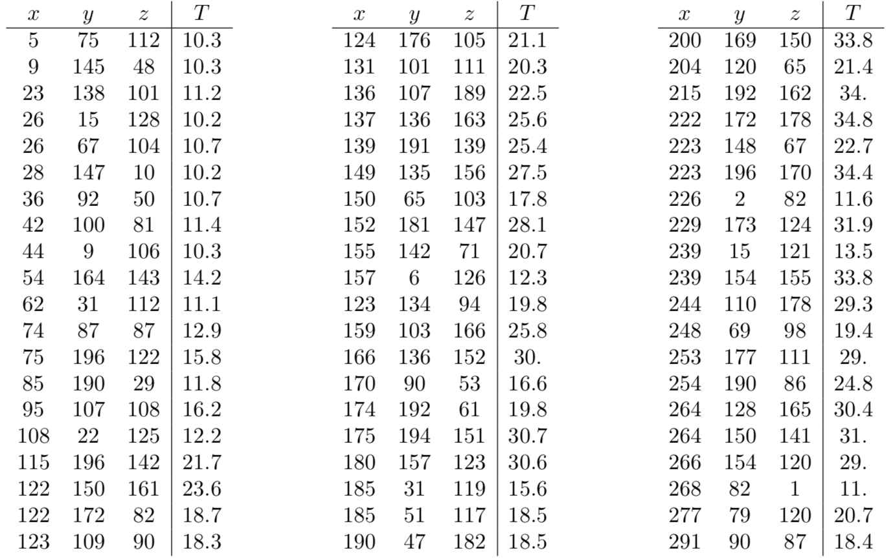

with many contributions and insight from my student
Students don't know what an integral is. $$ \iiint_E f \,dV$$
Let $E$ be the solid ball $x^2 +y^2 +z^2 \leq 1$.
Estimate the triple integral $$\iiint_E x^2 \,dV$$
A 20-ft-by-30-ft swimming pool is filled with water. The depth is measured at 5-ft intervals, starting at one corner of the pool, and the values are recorded in the table. Estimate the volume of water in the pool.
| 0 | 5 | 10 | 15 | 20 | 25 | 30 | |
| 0 | 2 | 3 | 4 | 6 | 7 | 8 | 8 |
| 5 | 2 | 3 | 4 | 7 | 8 | 10 | 8 |
| 10 | 2 | 4 | 6 | 8 | 10 | 12 | 10 |
| 15 | 2 | 3 | 4 | 5 | 6 | 8 | 7 |
| 20 | 2 | 2 | 2 | 2 | 3 | 4 | 4 |
Stewart, J. Calculus: Early Transcendentals. 8th Edition.
Exercise. In the following data set, temperature (in $^\circ$F) is taken at a number of points in a $3\text{m}\times 2\text{m}\times 2\text{m}$ walk-in freezer. $x$, $y$, and $z$ measure distance (in cm) from the west wall, south wall, and floor, respectively. $T$ is the temperature at the corresponding point.
Use the data to estimate the average temperature in the room using a Riemann sum with $\Delta V = 1 \text{m}^3$ (Your sum will have 12 terms).
Would you get a better answer by simply averaging all the $T$ values? Why or why not?

Implement various rules for computing Riemann sums over rectangular regions of integration
def northeast_rule(f,a,b,c,d,n):
'''An approximation of the integral of f over domain (a,b) x (c,d) by n^2 rectangles
using the upper-right corner as the sample point.'''
dx = (b-a) / n
dy = (d-c) / n
return sum([f(a + i * dx,c + j * dy) for i in range(1,n+1) for j in range(1,n+1)])*dx*dy
scipy.integrate.dblquad work?Explore the unknown (function values)
from part2 import f # no peeking!
Fill in the blanks.
from sklearn.neighbor import KNeighborRegressor